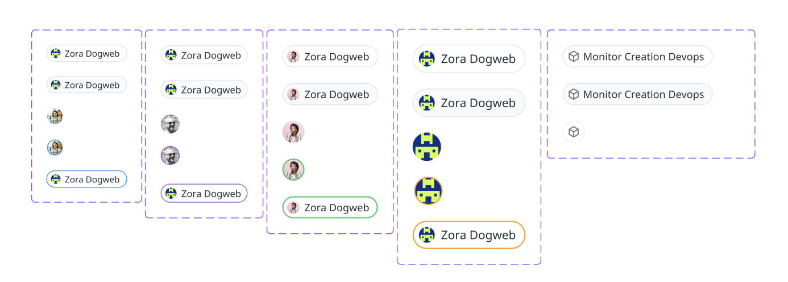

User Component
Problem
Datadog displays users in dozens of different ways across the product.
These have no consistent implementation, and engineering teams waste time implementing a new one each time.
None of our implementations have OOTB details, actions or functionality.
Goals for this design
Consolidate our treatment of users in the app
Offer user details at a glance
Present a common component for use across partner teams
As part of this work, I studied and catalogued every way we display users in the app
Variants and Flexibility
My design needed to introduce personality and consistency, while also working for the dozens of use cases across Datadog.
User pill and avatar variants
User popover variants
Final design
The outcome was a clean, flexible common component available for use across Datadog.